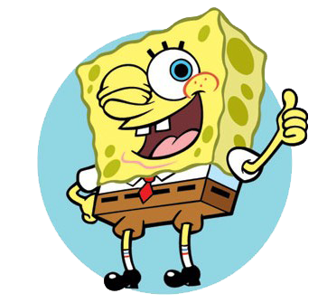
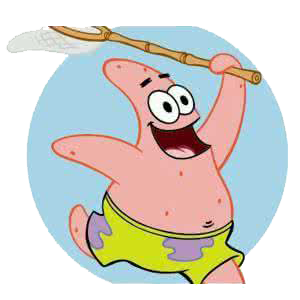
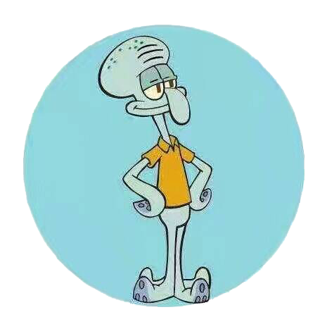
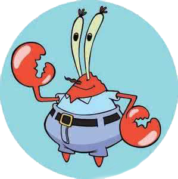
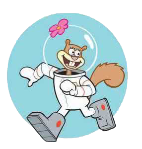
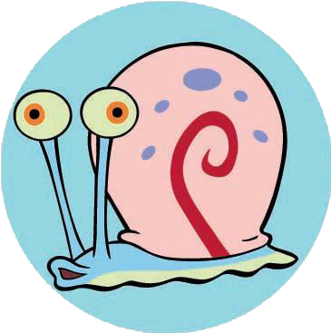
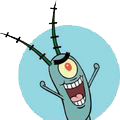

交流
关于
首页
详细
联系我们
个人信息
登录
注册
角色介绍
海绵宝宝

海绵宝宝
演员
海绵
配音
汤姆·肯尼
《海绵宝宝》的同名角色及主角。黄色长方形海绵，其身体构成如同清洁用海绵。生日是1986年7月14日。拥有两只左手，各四根手指。以棕色短裤、白色衬衫和红色领带为主要服装。具有不死之身，即使身体如何被破坏皆可恢复原状。虽然有正常进食，但纯滤食海水也能继续存活。体力薄弱，且所谓的哑铃其实是绒毛玩具；但随著剧情发展似乎逐渐提升。
派大星

派大星
演员
海星
配音
比尔·法格巴克
粉红色的海星。智商极低，头脑与身体仅使用插头连结；体型宽壮、力气大。做什么事都会搞砸，但开船却异常厉害，居住在一块大型圆形石头底下。懒惰并相当孩子气，时常在无意间呆滞的流口水，且讨厌洗澡、也不爱洗手、偏爱睡觉。兴趣是看电视，喜欢没有讯号的画面。跟海绵宝宝的交情最好；并时常鼓励海绵宝宝做出一些危险行动，往往让彼此陷入困境。
章鱼哥

章鱼哥
演员
六爪章鱼
配音
罗杰·布帕斯
大鼻子章鱼，容易愤怒且势利眼，相当自恋，自以为拥有艺术才能。目是光头，但曾有过黄色长卷发，并希望头发再长回来。居住在一栋仿复活节岛人像的房屋。担任"蟹堡王餐厅"的柜台人员，但并不喜欢自己的工作，喜欢吹奏竖笛及采用多种风格画自画像。讨厌海绵宝宝和派大星（尤其是前者），偶尔会对海绵宝宝表达认同，但通常是对他自己有利的时候。
蟹老板

蟹老板
演员
螃蟹
配音
克莱希·布朗
红色螃蟹，本名蟹阿金，在海军服役的外号为“铁甲金钟罩”。视金钱如生命，经常为了一块钱而去冒生命危险，极为自私。快餐店"蟹堡王餐厅的经营者，多次向员工宣导要有时间观念，因为"时间就是金钱"。只要发现能发短财的产品，就会忽视老本美味蟹堡并转换目标。营业时间常在办公室看报纸、数钱、洗金钱浴等，喜欢看讽刺戏剧，和痞老板是死对头。
珊迪

珊迪
演员
松鼠
配音
卡洛林·劳伦斯
来自德克萨斯州的雌性松鼠，身兼科学家、探险家和发明家。热爱运动（尤其空手道和滑沙）和科学，也是牛仔竞技的冠军。由于松鼠属於陆地生物，需要呼吸空气，在海底须穿著太空衣和头盔。平常居住在大型圆形强化玻璃防护罩下的海底树屋，内部环境与陆地相同，且可以季节轮替；若海洋生物入内须配戴装水的头盔。需要冬眠，期间情绪相当暴躁。
小蜗

小蜗
演员
蜗牛
配音
汤姆·肯尼
海绵宝宝的宠物蜗牛，只会“猫～”地叫。拥有理解自然语言并进行沟通的能力。虽然是蜗牛，但偶尔会穿布鞋，所以底部是有藏脚的；甚至曾教导海绵宝宝如何绑鞋带。内壳藏有海绵宝宝的一些东西小蜗的照片、吃饭用时钟及黏液。外壳附有降落伞机制。若是底部卡了东西会因不适而发飙咬人。讨厌洗澡。在梦境可以使用自然语言交谈，智商甚至超过海绵宝宝，是一名哲学家。
痞老板

痞老板
演员
浮游生物
配音
道格·劳伦斯
蟹老板的死对头，《海绵宝宝》的主要反派角色。由1%的邪恶和99%的热毒气（Hotgas）组成。只有一只眼睛，时常刺痛（因为他忘记眨眼）。快餐店“海之霸餐厅（Chum Bucket）”的老板。他的妻子是电脑，名叫凯伦。为了让自己的餐厅生意兴隆，一直偷取蟹堡王著名料理“美味蟹堡”的祖传秘方，却从未成功，最大的希望是统治全世界。